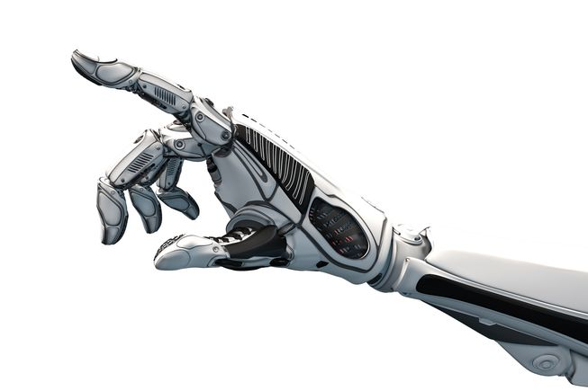

En nøyaktig bevegelse av en menneskelig evne til å utføre en delikat manøver med hender og armer.
Med et snev av maskin-læring og utvikling innen behandling av data, bruker du dette til læring ved å utføre. Mat inn allerede ferdige data og algoritmer, og la dem høste, samtidig som de fortsetter å mate dem med data.
Ikke en hengende og en robot-dansende maskin som C3-PO, men en forsiktig og nøyaktig maskin.
En maskinlærings-enhet som memorerer hver bevegelse med det som blir implementert som forhånds-brukte innlærings-algoritmer og evner. Læring ved å gjøre, samle inn data, bearbeide og med det målet å bli kjent med ethvert(mulig) miljø og alle typer oppgaver knyttet til dette spesielle feltet av industrien.
La oss si det slik, for hver bransje er det et begrenset antall oppgaver å gjøre det. Hvis du tar en bransje som for eksempel, maler-industrien, er det bare så og så mange måter å gjøre en malingsjobb på eller så og så mange måter å gjøre vedlikehold på. Du har et visst antall bygninger som enten er bygd eller som skal bygges . Sett alle disse ligningene eller målene (hva du enn vil kalle dem), så ser du antall objekter som kan gjøres med en oppgave er begrenset. Så med dette kan du telle antall eksisterende oppgaver, metoder, bygninger, miljøer, med underkategorier innenfor hver hoved-faktor. Med denne informasjonen innsamlet, behandlet og implementert til et arbeids-apparat, med nøyaktige etterlignende kroppsbevegelser, er du i teorien i stand til å utføre oppgaven med en enhet som er lik mange hundre forskjellige roller og ferdigheter i en hel bransje.
Fordi du kjenner antallet i en begrenset bransje, er det et slutt-nummer på det(et viss antall variasjoner). Derfor må det være begrenset, du kan se frem i tid og du kan kalle det ubegrenset. Fordi vi ikke kan forutse hva som vil være den matematiske "ligningen" til et begrenset antall av metoder osv. i enhver bransje.
